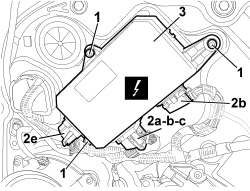

5505A47 PASSENGER SIDE DOOR CONTROL UNIT DIGITAL NETWORK MODE R R WITH PANEL REMOVED
- Path
- Procedures > 55 ELECTRICAL EQUIPMENT > 5505 INSTRUMENT/GAUGE ELECTRICAL CIRCUITS > 5505A MULTI-FUNCTION COMPONENTS > 5505A47 PASSENGER SIDE DOOR CONTROL UNIT DIGITAL NETWORK MODE R R WITH PANEL REMOVED
- Kind
- repair procedure (removal / refitting; the operation number is the code)
- Applies to
- all engines; all production periods
- Interactive page
- https://sloeber94.github.io/elrnDB-aBrrSpdr/en/#/946002336
Applies to: all engines; all production periods
 Removing
Removing
 Refitting
Refitting1. Undo the bolts.
2. Disconnect the electrical connections (2a-b-c, 2d, 2e).
Description | Component |
|---|---|
PASSENGER SIDE DOOR JUNCTION UNIT (NPP) |
3. Keep the control unit..

Applies to: all engines; all production periods
Refitting
Removing- Check that the control unit is not damaged.
- Connect the electrical connections for the control unit.
- Tighten the bolts.
Topics linked from this page (1)
Topics that link to this page (26)
- J042 RIGHT DOOR MIRROR ELECTRICAL ADJUSTMENT NOT WORKING
- 5505A46 CONTROL UNIT (DIGITAL NETWORK NODE) IN PASSENGER SIDE DOOR - R.R.
- E1050 CAN CONNECTION LINES - WIRING DIAGRAM
- E1050 CAN CONNECTION LINES - COMPONENT LOCATION
- E1050 CAN CONNECTION LINES - WIRING DIAGRAM
- E1050 CAN CONNECTION LINES - COMPONENT LOCATION
- E2510 COURTESY LIGHTS - WIRING DIAGRAM
- E2510 COURTESY LIGHTS - COMPONENT LOCATION
- E2521 PUDDLE LIGHTS - WIRING DIAGRAM
- E2521 PUDDLE LIGHTS - COMPONENT LOCATION
- E2535 CONTROLS LIGHTING - WIRING DIAGRAM
- E2535 CONTROLS LIGHTING - COMPONENT LOCATION
- E3030 REAR SCREEN AND REAR VIEW MIRROR DEMISTING - WIRING DIAGRAM
- E3030 REAR SCREEN AND REAR VIEW MIRROR DEMISTING - COMPONENT LOCATION
- E3032 REAR VIEW MIRRORS ADJUSTMENT - WIRING DIAGRAM
- E3032 REAR VIEW MIRRORS ADJUSTMENT - COMPONENT LOCATION
- E3040 CENTRAL LOCKING - WIRING DIAGRAM
- E3040 CENTRAL LOCKING - COMPONENT LOCATION
- E3050 FRONT ELECTRIC WINDOWS - WIRING DIAGRAM
- E3050 FRONT ELECTRIC WINDOWS - COMPONENT LOCATION
- E3050 FRONT ELECTRIC WINDOWS - WIRING DIAGRAM
- E3050 FRONT ELECTRIC WINDOWS - COMPONENT LOCATION
- E7015 ALARM - WIRING DIAGRAM
- E7015 ALARM - COMPONENT LOCATION
- E7015 ALARM - WIRING DIAGRAM
- E7015 ALARM - COMPONENT LOCATION